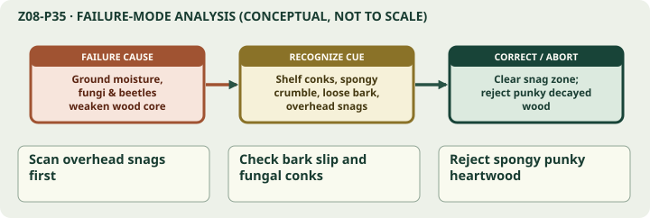

Z08-P35 · Rocks, minerals and materials · New manuscript
Standing Dead vs Ground-Contact Wood Decay Screening
Assess hidden fungal rot, insect galleries, and moisture gradients in dead wood while staying clear of hazardous overhead snags.
When it applies · Evaluating fallen branches and deadfall while avoiding widowmaker snags.
Equipment · Visual overhead canopy scan before approaching deadfall.

Actions
- Scan overhead canopies for leaning dead trees and hung-up widowmaker limbs before inspecting any downed wood below.[R15, E05]
- Recognize advanced fungal decay by bracket conks, black zone lines, soft spongy texture, hollow sound, or wood crumbling into fibrous powder.[R15]
- Verify internal dryness rather than assuming standing dead branches are dry, because wind-driven rain and snowmelt wick deep into cracked wood.[R15]
Failure recognition · Pulling on standing dead snags or relying on punky ground-contact logs causes fatal overhead limb falls and collapsed supports.[R15, E05]
Verify · Overhead hazard scan is clear and inspected deadfall shows solid uncrumbled dry fibers.[R15, E05]
Stop or change course · Stop immediately and move clear of leaning snags, hung branches, and wind-swaying dead trees.[R15, E05]
Evidence and editorial notes
- E05 · NWS · What To Do If You're Caught in a Winter Storm (current web edition)
- Section: Outside and find shelter · Conditions: Cold, wet or windy winter conditions
Support: Block wind, stay dry and keep off cold ground. Keep exposure reduction separate from making a fire.
Limitations: Improvised windbreaks do not provide rated thermal protection or snow-load capacity. · Conflicting evidence: None; aligns with CDC-H.
Editorial note: Separates wind, ground, and moisture heat-loss pathways. · Specialist reviewer: Cold-weather shelter specialist
Primary source · checked 2026-11-24 - R15 · Minnesota DNR · Native Trees of Minnesota Identification Reference (Current web edition)
- Section: Regional wood species, grain, bark, and moisture variability · Conditions: Dead downed wood and natural bast fibers in Upper Midwest forests
Support: Wood density, grain straightness, resin content, and decay state vary widely by species, tree part, and moisture history.
Limitations: Visual grain inspection cannot certify structural load capacity; avoid cutting live trees where prohibited and reject punky or cracked wood. · Conflicting evidence: None noted.
Editorial note: Reconciles B007 wood notes with material limits. · Specialist reviewer: Forestry and wood-science specialist
Primary source · checked 2026-11-25
Source lineage · New manuscript (Z08 P16 wood degradation) · Classification · New manuscript.